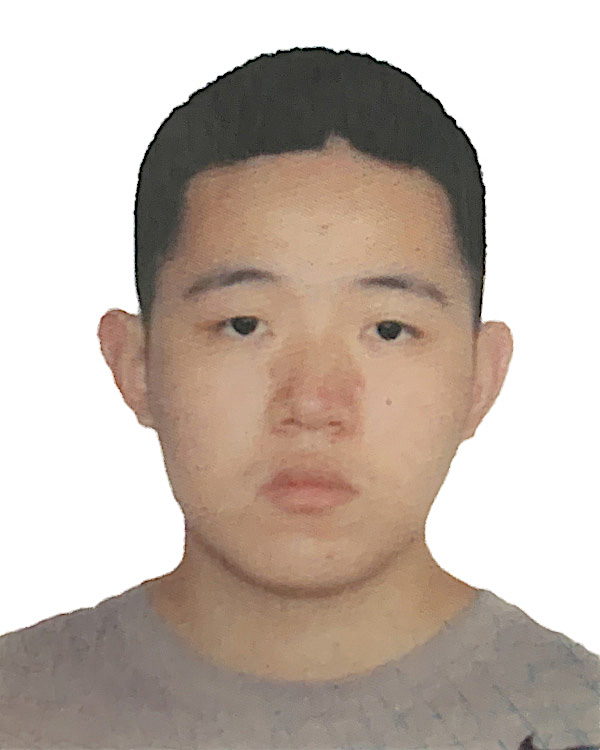
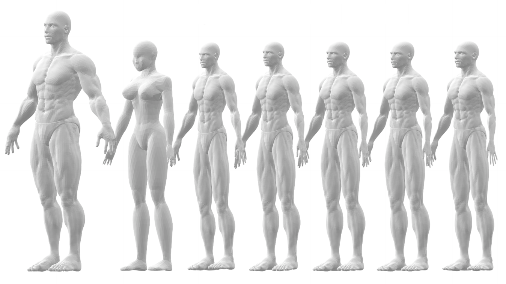
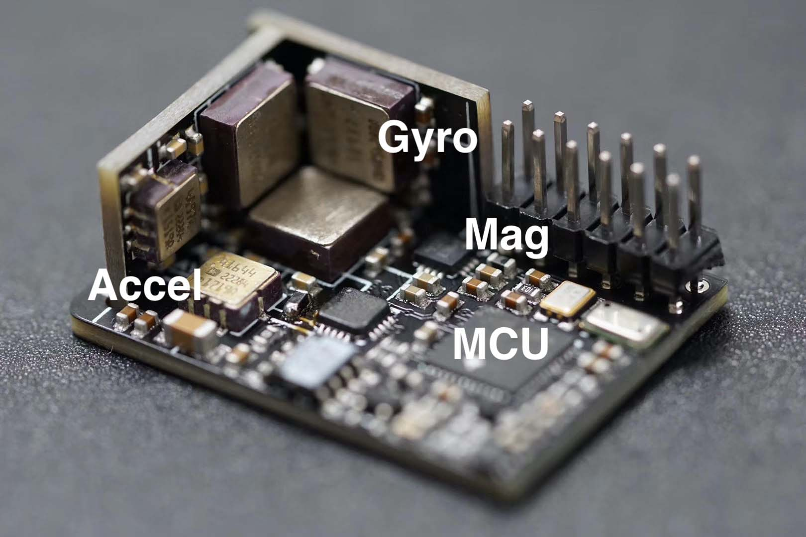

Jin Wu（吴荩/吳藎）
|
 | Jin Wu, Tenured Full Professor, |
Editorial Services
-
Technical Editor of IEEE/ASME Transactions on Mechatronics (SCI/EI Indexed) link
-
Editor of Scientific Reports (Nature Publishing) (SCI/EI Indexed) link
-
Associate Editor of Frontiers in Aerospace Engineering link
-
Associate Editor of AppliedMath (ESCI/EI Indexed) link
-
Associate Editor of Artificial Intelligence and Autonomous Systems (EiCs: Prof. Witold Pedrycz and Prof. Fuchun Sun 孫富春 教授) link
-
Associate Editor for Positioning, Navigation and Timing (導航定位與授時) 中國航天科工集團有限公司 link
-
Associate Editor of IEEE/RSJ International Conference on Intelligent Robots and Systems (IROS 2025), Hangzhou, China link
-
Associate Editor of IEEE International Conference on Robotics and Automation (ICRA 2026), Vienna, Austria link
-
Area Chair of IEEE ICASSP 2025 (IEEE International Conference on Acoustics, Speech, and Signal Processing) link
-
Area Chair of IEEE ICASSP 2026 (IEEE International Conference on Acoustics, Speech, and Signal Processing) link
Academic Services
-
1. Track Chair for IEEE International Conference on Consumer Electronics, 2024, Las Vegas, USA. link
2. Special-Session Chair for IEEE ICGNC 2022
3. Chair for IEEE CTSoc Gaming, Entertainment and Media (GEM), 2024, Turin, Italy link
4. Special Session Chair for IEEE ITSC, 2023, Bizkaia, Spain. link
5. Committee Member of IEEE Consumer Technology Society link
6. Publication Liaison of Sensors and Actuators Section of IEEE Consumer Technology Society.
7. Guest Editor of Symmetry Recent Progress in Robot Control Systems Vol. I(Leading Guest Editor: Prof. Chengxi Zhang (Jiangnan University)) link
8. Guest Editor of Symmetry Recent Progress in Robot Control Systems Vol. II (Leading Guest Editor: Prof. Chengxi Zhang (Jiangnan University)) link
9. Guest Editor of Applied Sciences Autonomous Formation Systems: Guidance, Dynamics and Control (Leading Guest Editor: Prof. Jihe Wang (Sun-Yat Sen University)) link
10. Guest Editor of Sustainability (Leading Guest Editor: Prof. Shunyi Zhao (Jiangnan University))
11. Guest Editor of Aerospace Satellite Formation Flying: Dynamics and Control (Leading Guest Editor: Dr. Danil Ivanov (Russian Academy of Sciences)) link
12. Guest Editor of Machine Intelligence Research (Springer) Special Issue on Embodied Intelligence (Leading Guest Editor: Prof. Wei He, University of Science and Technology Beijing/Zhengzhou University) link
13. Steering Committee Member of Autonomous Robotic Technology Seminar (ARTS 2024), Shenzhen, China (General Chair: Prof. Fei Gao, Zhejiang University) link
14. Committee Member of Youth Work Committee, Chinese Association for Automation (CAA, 中國自動化學會 青年工作委員會 委員) link
15. Vice President of Autonomous Driving Center, Tsinghua University Research Institute, Shenzhen. (清華大學深圳研究院自動駕駛中心副主任)
16. Guest Editor of Artificial Intelligence and Autonomous Systems Special Issue on Planning, Control, and Learning in Mobile Robots link
17. Chair for IEEE CTSoc Gaming, Entertainment and Media (GEM), 2025, Kaohsiung, Taiwan link
18. Technical Chair for IEEE International Conference on Consumer Electronics (ICCE), 2025, Las Vegas link
19. Chair for IEEE ICCE Conference Taiwan (ICCE-TW), 2025, Kaosiung, Taiwan link
20. Steering Committee Member of Autonomous Robotic Technology Seminar (ARTS 2025), Hangzhou, China (General Chair: Prof. Zhe Liu, Shanghai Jiao Tong University) link
21. Committee Member of IEEE International Conference on Consumer Electronics (ICCE 2026), Dubai, UAE link
22. Publication Chair of International Conference on Artificial Intelligence and Advanced Autonomous Systems (AIAAS 2026), Tibet, China link
23. Publicity Chair of IEEE International Conference on Real-time Computing and Robotics (IEEE RCAR 2026), Seychelles link
Awards
-
1. Outstanding Reviewer for IEEE Transactions on Instrumentation and Measurement link.
2. Reviewer Award for IEEE Sensors Journal and Asian Journal of Control.
3. Best Paper Award for Transport Safety and Environment (Oxford University Press, 2022 Year Round).
4. Best Paper Award for IEEE Robotics and Automation Letters (IEEE Robotics and Automation Society, 2025 Year Round).
5. Second Class Honor for Chinease Instrumentation Society (中國儀器儀表學會科技進步獎, 2025 Year Round).
6. Outstanding Reviewer for IEEE International Conference on Robotics and Biomimetics (ROBIO), 2025 Year Round.
Research Interests
-
Aerospace Engineering and Space Robotics
-
Mechatronics and Numerical Optimization
-
Integrated Navigation and Multi-sensor Fusion
-
Machine Vision and 3D Reconstruction
-
Rigid-body Dynamics and Robotic Calibration
-
Structual Chemistry and Hybridyzation Theory
-
Embedded Systems, Electronics and Programming
-
Development on Qt, iOS and Android

(Left) Attitude/Velocity/Position Estimation and Sensor Calibration for UAV Systems; (Right) Participated Quadruped Robot in Tencent Robotics X
Navigation of Autonomous Vehicles and Networks
 
(Left) Human Motion Tracking, Recognition and Deformation; (Right) Miniaturized Inertial Measurement Unit (IMU) with Geomagnetic Aid for Robot State Estimation
Selected Publications (IEEE/AIAA Journals, IJRR, Automatica, ICRA, IROS)
-
Wu, J. (2019). Optimal Continuous Unit Quaternions from Rotation Matrices. AIAA J. Guid. Control Dyn. (JGCD). DOI: 10.2514/1.G004043, (code)
-
Wu, J. (2019) Real-time Magnetometer Disturbance Estimation via Online Nonlinear Programming. IEEE Sensors J.. DOI: 10.1109/JSEN.2019.2901925, (code)
-
Wu, J. (2019) MARG Attitude Estimation Using Gradient-Descent Linear Kalman Filter. IEEE Trans. Autom. Sci. Eng. (T-ASE). DOI: 10.1109/TASE.2020.2978106, (code)
-
Wu, J. (2020) Unified Attitude Determination Problem from Vector Observations and Hand-eye Measurements. IEEE Trans. Aerosp. Elect. Syst. (T-AES). DOI: 10.1109/TAES.2020.2982482, (code)
-
Zhang, C., Yin, T., Wang, W., Wu, J., Wang, J., Qi, Y., He, W. (2025) Clustering Strategy for Megaconstellation with Synergistic Energy and Size Considerations. IEEE Trans. Aerosp. Elect. Syst. (T-AES). DOI: 10.1109/TAES.2025.3561112
-
Zhang, C., Wu, J., He, W., et al. (2025) Enhancing Attitude Tracking with Self-learning Control using Tanh-type Learning Intensity. IEEE Trans. Autom. Sci. Eng. (T-ASE). DOI: 10.1109/TASE.2025.3581953
-
Zhang, C., Wu, J., He, W., et al. (2025) Configuration Maintenance in Multi-Satellite Orbits via Co-Phase and Control Optimization. IEEE Trans. Aerosp. Elect. Syst. (T-AES).
-
Wu, J. (2020) Rigid 3D Registration: A Simple Method Free of SVD and Eigen-Decomposition. IEEE Trans. Instrum. Meas. (T-IM). DOI: 10.1109/TIM.2020.2987495, (code)
-
Jiang, Y., Gao, W., Wu, J., Chai, T., Lewis, F.(2022) Reinforcement Learning and Cooperative H∞ Output Regulation of Linear Continuous-Time Multi-Agent Systems. Automatica. DOI: 10.1016/j.automatica.2022.110768
-
Jiang, Y., Gao, W., Wu, J., Chai, T., Yang, T.(2025) Off-Policy Reinforcement Learning for H-inf Control of Linear Discrete-Time Systems with Network Induced Dropouts. IEEE Transactions on Automatic Control (T-AC). DOI: 10.1109/TAC.2025.3582529
-
Wu, J., Zheng, Y., Gao, Z., Jiang, Y., Hu, X., Zhu, Y., Jiao, J. (2022) Quadratic Pose Estimation Problems: Globally Optimal Solutions, Solvability/Observability Analysis and Uncertainty Description. IEEE Trans. Robotics (T-RO). DOI: 10.1109/TRO.2022.3155880, (C++/MATLAB/Octave/Python/ROS Codes), (supplementary material)
-
Wei, H., Jiao, J., Hu, X., Yu, J., Xie, X., Wu, J., Zhu, Y. (2024) FusionPortableV2: A Unified Multi-Sensor Dataset for Generalized SLAM Across Diverse Platforms and Scalable Environments. Int. J. Robotics Research (IJRR). DOI: 10.1177/02783649241303525 (datasets)
-
Chen, Z., Qi, Y., Wu, J., Hu, X., et al. (2025) Heterogeneous LiDAR Dataset for Benchmarking Robust Localization in Diverse Degenerate Scenarios. Int. J. Robotics Research (IJRR). DOI: 10.1177/02783649251344967 (datasets)
Wu, J., Zhou, Z., Chen, J., Fourati, H. and Li, R. (2016). Fast Complementary Filter for Attitude Estimation Using Low-Cost MARG Sensors. IEEE Sensors J.. DOI: 10.1109/JSEN.2016.2589660, (code).
Wu, J., Zhou, Z., Gao, B., Li, R., Cheng, Y. and Fourati, H. (2018). Fast Linear Quaternion Attitude Estimator Using Vector Observations. IEEE Trans. Autom. Sci. Eng. (T-ASE). DOI: 10.1109/TASE.2017.2699221, (code)（ESI Highly Cited Paper 2017-2019，ESI高被引论文2017-2019）
Wu, J., Zhou, Z., Fourati, H. and Cheng, Y. (2018) A Super Fast Attitude Determination Algorithm with Accelerometer and Magnetometer. IEEE Trans. Consum. Elect. (T-CE). DOI: 10.1109/TCE.2018.2859625, (code)
-
Wu, J., Zhou, Z., Fourati, H., Li, R. (2019) Generalized Linear Quaternion Complementary Filter for Attitude Estimation from Multi-Sensor Observations: An Optimization Approach. IEEE Trans. Autom. Sci. Eng. (T-ASE). DOI: 10.1109/TASE.2018.2888908, (code)
-
Wu, J. and Qi, Y. (2019) Computationally Efficient Robust Algorithm for Generalized Sensor Calibration Problem AR = RB. IEEE Sensors J.. DOI: 10.1109/JSEN.2019.2924668, (code)
-
Wu, J., Sun, Y., Wang, M. (2019) Hand-eye Calibration: 4D Procrustes Analysis. IEEE Trans. Instrum. Meas. (T-IM). DOI: 10.1109/TIM.2019.2930710, (code), (data)
-
Wu, J., Li, R. and Zhou, Z. (2019) Fast Symbolic 3-D Registration Solution. IEEE Trans. Autom. Sci. Eng. (T-ASE). DOI: 10.1109/TASE.2019.2942324, (code - MATLAB), (code - C++)
-
Wu, J., Zhang, C., Zhou, Z. (2020) Correspondence Matching and Time Delay Estimation for Hand-eye Calibration. IEEE Trans. Instrum. Meas. (T-IM). DOI: 10.1109/TIM.2020.2987657
-
Wu, J., Huang, Y., Jin, C., Wu, Y., Yu, C. (2020) SE(n)++: An Efficient Solution to Multiple Pose Estimation Problems. IEEE Trans. Cybern. (T-CYB). DOI: 10.1109/TCYB.2020.3015039 (code)
-
Wu, J., Wang, M., Fourati, H., Li, H., Zhang, C., Jiang, Y., Hu, X. (2022) Generalized n-Dimensional Rigid Registration: Theory and Applications. IEEE Trans. Cybern. (T-CYB). DOI: 10.1109/TCYB.2022.3168938 (code)
-
Wu, J., Zhu, Y., Zou, Z., Dai, M., Zhang, C., Jiang, Y., Li, C. (2020) Globally Optimal Symbolic Hand-Eye Calibration. IEEE/ASME Trans. Mechatronics (T-MECH). DOI: 10.1109/TMECH.2020.3019306
-
Sun, R., Shan, A., Zhang, C., Wu, J., Jia, Q. (2020) Quantized Fault-Tolerant Control for Attitude Stabilization with Fixed-Time Disturbance Observer. AIAA J. Guid. Control Dyn. (JGCD). DOI: 10.2514/1.G005465
-
Wu, J., Jiang, Y., Li, C., Sun, R., Zhang, C., Yu, Y., Zhu, Y. (2020) Circuit Synthesis of 3-D Rotation Orthonormalization. IEEE Trans. Circuit. Syst. II: Exp. Briefs (T-CAS2). DOI: 10.1109/TCSII.2020.3027025
-
Fan, R., Wang, H., Cai, P., Wu, J., Bocus, J., Qiao, L. (2021) Learning Collision-Free Space Detection from Stereo Images: Homography Matrix Brings Better Data Augmentation. IEEE/ASME Trans. Mechatronics (T-MECH). DOI: 10.1109/TMECH.2021.3061077
-
Wu, J., Wang#, M., Jiang*, Y., Yi, B., Fan, R. (2021) Simultaneous Hand-Eye/Robot-World/Camera-IMU Calibration. IEEE/ASME Trans. Mechatronics (T-MECH). DOI: 10.1109/TMECH.2021.3103995 (code)
-
Wu, J., Li, C., Zhang, C., Jiang, Y., Huang, Y. (2021) Trust-Region Solver of A Nonlinear Magnetometer Disturbance Estimation Problem. IEEE Sensors J.. DOI: 10.1109/JSEN.2021.3092678 (code)
-
Wu, J., Wang, C., Li, C., Jiang, Y., Zhang, C., Huang, Y., Qi, Y., Jiao, J., Fan, R., Zhang, W. (2024) On Similarity Transformation Problems: Globally Optimal Results and Applications. IEEE Trans. Instrum. Meas. (T-IM). DOI: 10.1109/TIM.2024.3438850 (code)
-
Wu, J., Zhang, C. (2025) Multi-LiDAR Registration: A Joint Sensor-Centric Optimization Approach. IEEE Sensors Lett. (SENS-L). DOI: 10.1109/LSENS.2025.3644412
-
Li, C., Xing, C., Wu, J., Qiao, W., Zhou, M. (2025) Error Mechanisms and Calibration Scheme for Low Bias Mode-Matched Micro Resonant Gyroscopes under Ocean Environment. IEEE Trans. Instrum. Meas. (T-IM). DOI: 10.1109/TIM.2025.3580861
-
Wang, Y., Hou, J., Li, C., Wu, J., Jiang, Y., Hung, J. (2022) Ultra-fast Mode Reversal Coriolis Gyroscopes. IEEE/ASME Trans. Mechatronics (T-MECH). DOI: 10.1109/TMECH.2022.3192393
-
Jiao, J., Wei, H., Chen, F., Wu, J. (2023) LCE-Calib: Automatic LiDAR-Frame/Event Camera Extrinsic Calibration With A Globally Optimal Solution. IEEE/ASME Trans. Mechatronics (T-MECH). DOI: 10.1109/TMECH.2023.3259444 (code)
-
Jiao, J., Geng, R., Li, Y., Xin, R., Yang, B., Wu, J., Kanoulas, D., Fan, R. (2024) Real-Time Metric-Semantic Mapping for Autonomous Navigation in Outdoor Environments. IEEE Trans. Autom. Sci. Eng. (T-ASE). DOI: 10.1109/TASE.2024.3429280 (code)
-
Wang, Z., Wang, M., Wu, J., Huang, Y., Zhang, Y. (2022) A Computationally Efficient Outlier-Robust Cubature Kalman Filter for Underwater Gravity Matching Navigation. IEEE Trans. Instrum. Meas. (T-IM). DOI: 10.1109/TIM.2022.3141153
-
Zou, Z., Li, L., Hu, X., Zhu, Y., Wu, J. (2023) Robust Equipment-Free Calibration of Low-Cost Inertial Measurement Units. IEEE Trans. Instrum. Meas. (T-IM). DOI: 10.1109/TIM.2023.3234081
-
Zhou, Z., Wu, J. (2020) Cascaded Indirect Kalman Filters for Land-Vehicle Attitude Estimation with MARG Sensors and GNSS Observations. IEEE Trans. Vehicular Tech. (T-VT). DOI: 10.1109/TVT.2021.3067659
-
Fan, X., Xue, L., He, Z., Zhang, C., Wu, J. (2025) Consensus-Based Cooperative Control for Connected Vehicle Platoon with Time-Varying Delays and Switching Topologies. IEEE Trans. Vehicular Tech. (T-VT). DOI: 10.1109/TVT.2021.3067659
-
Liu, H., Tang, M., Jia, M., Wu, J. et al. (2024) VHDMap-SE: A Universal Vectorized High-definition Map Aided Vehicle State Estimator. IEEE Trans. Intell. Vehicles (T-IV). DOI: 10.1109/TIV.2024.3388204
-
Zhang, C., Ahn, C., Xiao, B., Wu, J. (2020) On Attitude Tracking Control with Communication-Saving: An Integrated Quantized and Event-Based Scheme. IEEE Trans. Circuit. Syst. II: Exp. Briefs (T-CAS2). DOI: 10.1109/TCSII.2020.3047679
-
Zhang, C., Ahn, C., Wu, J., He, W., Jiang, Y. (2021) Robustification of Learning Observers to Uncertainty Identification via Time-varying Learning Intensity. IEEE Trans. Circuit. Syst. II: Exp. Briefs (T-CAS2). DOI: 10.1109/TCSII.2021.3107161
-
Wang, X., Li, C., Wang, X., Tan, L., Wu, J. (2022) Spatio–Temporal Attention-Based Deep Learning Framework for Mesoscale Eddy Trajectory Prediction. IEEE J. Sel. Topic Appl. Earth Obs. Remote Sens. (JSTARS). DOI: 10.1109/JSTARS.2022.3174239
-
Dai, M., Zhang, C., Xiao, B., Wu, J. (2021) Event-Triggered Policy to Spacecraft Attitude Stabilization With Actuator Output Nonlinearities. IEEE Trans. Circuit. Syst. II: Exp. Briefs (T-CAS2). DOI: 10.1109/TCSII.2021.3056761
-
Dai, M., Ahn, C., Zhang, C., Wei, C. Wu, J. (2021) On Prescribed Performance Synchronization to QUAD Nonlinear Multi-Agent Networks. IEEE Trans. Circuit. Syst. II: Exp. Briefs (T-CAS2). DOI: 10.1109/TCSII.2021.3118553
-
Dai, M., Ahn, C., Zhang, C., Gui, M. Wu, J. (2021) Performance Adjustable Event-Triggered Synchronization Policies to Nonlinear Multi-Agent Systems. IEEE Systems J.. DOI: 10.1109/JSYST.2021.3089721
-
Zhang, S., Zhang, Q., Chen, F., Wu, J. (2020) A VT-HMM-based Framework for Countdown Timer Traffic Light State Estimation. IEEE Trans. Intell. Transp. Syst. (T-ITS). DOI: 10.1109/TITS.2023.3265985 (code)
-
Wang, Z., Xu, J., Gong, Z., Wu, J. (2021) Path Following for Unmanned Combat Aerial Vehicles using Three-dimensional Nonlinear Guidance. IEEE/ASME Trans. Mechatronics (T-MECH). DOI: 10.1109/TMECH.2021.3110262
-
Qi, Y., Jiang, J., Wu, J., Wang, J., Wang, C., Shan, J. (2019) Autonomous Landing Solution of Low-Cost Quadrotor on a Moving Platform. Robotics and Autonomous Systems. DOI: 10.1016/j.robot.2019.05.004
-
Wang, J., Zhang, C., Ahn, C., Wu, J. (2023) Continuous-Discrete Cubature Kalman Filter with Log-Euclidean Metric-based Covariance Integration. IEEE Trans. Circuit. Syst. II: Exp. Briefs (T-CAS2). DOI: 10.1109/TCSII.2023.3279140
-
Jiang, Y., Zhang, K., Wu, J., Zhang, C., Xue, W., Chai, T., Lewis, F.(2021) H∞ based Minimal Energy Adaptive Control with Preset Convergence Rate. IEEE Trans. Cybern. (T-CYB). DOI: 10.1109/TCYB.2021.3061894
-
Chen, X., Liu, H., Wang, C., Wu, J., Song, R. (2022) LoPF: An Online LiDAR-only Person-Following Framework. IEEE Trans. Instrum. Meas. (T-IM). DOI: 10.1109/TIM.2022.3212521
-
Zhang, C., Ahn, C., Wu, J., He, W., Jiang, Y. (2021) Robustification of Learning Observers to Uncertainty Identification via Time-varying Learning Intensity. IEEE Trans. Circuit. Syst. II: Exp. Briefs (T-CAS2). DOI: 10.1109/TCSII.2021.3107161
-
Zhang, S., He, J., Yang, B., Zhu, Y., Wu, J., Jiao, J., Yuan, J. (2024) VirCap: Virtual Camera Exposure Control based on Image Photometric Synthesis for Visual SLAM Application. IEEE/ASME Trans. Mechatronics (T-MECH). DOI: 10.1109/TMECH.2024.3454075
-
Wang, C., Zhang, C., Wu, J., Zhao, S., Huang, B. (2024) Factor Graph Optimization for Flexibly Modeled INS/GPS Navigation in Graphical State-Space. IEEE Trans. Indust. Informatics (T-II). DOI: 10.1109/TII.2024.3449990
-
Chen, Z., Tang, X., Cheng, J., Wu, J., Chen, X., Xue, B. (2024) CV-MOS: A Cross-View Model for Motion Segmentation. IEEE Trans. Instrum. Meas. (T-IM). DOI: 10.1109/TIM.2024.3458036
-
Dong, J., Cheng, J., Wu, J., Zhang, C., Zhao, S., Tang, X. (2024) A Real-Time AIoT System for UAV Antenna Interference Detection: An Optimized Edge-Cloud Collaboration Approach. IEEE Internet of Things J. (IOTJ).
DOI: 10.1109/JIOT.2024.3512867 -
Ma, N., Fan, J., Wang, W., Wu, J., Jiang, Y., Xie, L., Fan, R. (2022) Computer Vision for Road Imaging and Pothole Detection: A State-of-the-Art Review of Systems and Algorithms. Transport. Safety Environ.. DOI: 10.1093/tse/tdac026 (Best Paper Award in 2022)
-
Wang, X., Wang, X.-S., Yu, M., Li, C., Song, D., Ren, P., Wu, J. (2021) MesoGRU: Deep Learning Framework for Mesoscale Eddy Trajectory Prediction. IEEE Geosci. Remote Sens. Lett. (GRSL). DOI: 10.1109/LGRS.2021.3087835
-
Hu, X., Wu, J., Xue, B., Zhu, Y., Jia, M., Qi, Y., Jiang, Y., Tan, P., Zhang, W. (2024) AM-Align: Globally Optimal Estimation of Accelerometer-Magnetometer Misalignment. IEEE Trans. Instrum. Meas. (T-IM). DOI: 10.1109/TIM.2025.3541657 (code)
-
Xue, B., Zhu, Y., Liu, T., Wu, J., Jiao, J., Jiang, Y., Zhang, C., Jiang, X., He, Z. (2024) sQPEP: Global Optimal Solutions to Scaled Quadratic Pose Estimation Problems. IEEE Trans. Instrum. Meas. (T-IM). DOI: 10.1109/TIM.2025.3540135
-
Xue, B., Zhu, Y., Liu, T., Wu, J., Jiao, J., Jiang, Y., Zhang, C., Jiang, X., He, Z. (2025) Constraint-Based Hand-Eye Calibration for Large-Scale Intelligent Guided Vehicles. IEEE Trans. Instrum. Meas. (T-IM). DOI: 10.1109/TIM.2025.3540135
-
Wang, X., Wang, X.-S., Li, C., Tan, L., Wu, J. (2021) Spatio–Temporal Attention-Based Deep Learning Framework for Mesoscale Eddy Trajectory Prediction. IEEE J. Select. Topics Appl. Earth Observ. Remote Sens. (JSTARS). DOI: 10.1109/JSTARS.2022.3174239
-
Chen, F., Li, L., Zhang, S., Wu, J. (2022) PBACalib: Targetless Extrinsic Calibration for High-Resolution LiDAR-Camera System Based on Plane-Constrained Bundle Adjustment. IEEE Robot. Autom. Lett. (RAL). DOI: 10.1109/LRA.2022.3226026 (code)
-
Luo, J., Cheng, J., Xiang, Q., Wu, J., Fan, R., Chen, X., Tang, X. (2025) OverlapMamba: A Shift State Space Model for LiDAR-based Place Recognition. IEEE Robot. Autom. Lett. (RAL). DOI: 10.1109/LRA.2025.3582109 (code)
-
Liu, Y., Xue, B., Mei, X., Wu, J. (2025) Deep Reinforcement Learning Based Autonomous Drift System for Abrupt Obstacle Avoidance. IEEE Robot. Autom. Lett. (RAL). DOI: 10.1109/LRA.2025.3377890
-
Liu, Y., Wu, J., Ma, F., Zhang, C. (2024) Biquaternion Evolution in Attitude Estimation Using A Generalized Vector Measurement. IEEE Sensors Lett. (SENSL). DOI: 10.1109/LSENS.2024.3521956 (code)
-
Huang, H., Sun, Y., Wu, J., Jiao, J., Hu, X., Zheng, L. (2023) On Bundle Adjustment for Multiview Point Cloud Registration. IEEE Robot. Autom. Lett. (RAL). DOI: 10.1109/LRA.2021.3105686
-
Zhong, S., Qi, Y., Chen, H., Wu, J., Ma, J. (2024) S3E: A Mulit-Robot Multimodal Dataset for Collaborative SLAM . IEEE Robot. Autom. Lett. (RAL). DOI: 10.1109/LRA.2024.3490402 (dataset)
-
Jia, M., Zhang, Q., Yang, B., Wu, J., Jensfelt, P. (2024) BeautyMap: Binary-Encoded Adaptable Ground Matrix for Dynamic Points Removal in Global Maps. IEEE Robot. Autom. Lett. (RAL). DOI: 10.1109/LRA.2024.3402625 (code)
-
Hu, X., Wu, J., He, W., et al. (2025) MapEval: Towards Unified, Robust and Efficient SLAM Map Evaluation Framework. IEEE Robot. Autom. Lett. (RAL). DOI: 10.1109/LRA.2024.3402625 (code)
-
Zhang, S., He, J., Zhu, Y., Wu, J., Yuan, J. (2024) Efficient Camera Exposure Control for Visual Odometry via Deep Reinforcement Learning IEEE Robot. Autom. Lett. (RAL). DOI: 10.1109/LRA.2024.3402625
-
Zhao, S., Zhang, C., Wu, J., Liu, F. (2023) Localization of underground pipe jacking machinery: A reliable, real-time and robust INS/OD solution. IFAC Control Eng. Pract. (CEP). DOI: 10.1016/j.conengprac.2023.105711
-
Hu, X., Zheng, L., Wu, J., Tang, X., et al. (2024) PALoc: Advancing SLAM Benchmarking with Prior-Assisted 6-DoF Trajectory Generation and Uncertainty Estimation. IEEE/ASME Trans. Mechatronics (T-MECH). DOI: 10.1109/TMECH.2024.3362902 (code)
-
Zhong, S., Qi, Y., Wu, J., et al. (2024) DCL-SLAM: A distributed collaborative lidar slam framework for a robotic swarm. IEEE Sensors J.. DOI: 10.1109/JSEN.2023.3345541 (code)
-
Song, D., Wang, X., Wu, J., et al. (2021) Novel Underwater Glider-Based Absolute Oceanic Current Observation Solutions. IEEE Sensors J.. DOI: 10.1109/JSEN.2020.3048136
-
Huang, X., Wu, J., et al. (2024) LEPS: A lightweight and effective single-stage detector for pothole segmentation. IEEE Sensors J.. DOI: 10.1109/JSEN.2023.3330335
-
Jia, Q., Zhang, X, Wu, J., et al. (2024) Reconfigurable Fault-Tolerant Attitude Tracking for Spacecraft with Unknown Nonlinear Dynamics using Neural Network Estimators with Learning-Type Weight Updating. Nonlinear Dynamics (Springer) . DOI: 10.1007/s11071-024-09502-1
-
Tang, M., Gan, L., Li, Y., Yan, X., Liu, H., Wu, J. (2025) Energy-limited Lifelong Multi-Agent Pickup and Delivery. Machine Intelligence Research (Springer, Editor-in-Chief: Prof. Tieniu Tan, Academician of CAS) . DOI: 10.1007/s11071-024-09502-1
-
Tang, M., Xin, R., Fang, C., Li, Y., Liu, H., Wu, J. (2025) GPU-Accelerated Conflict-Based Search for Multi-Agent Embodied Intelligence. Machine Intelligence Research (Springer, Editor-in-Chief: Prof. Tieniu Tan, Academician of CAS) . DOI: 10.1007/s11071-024-09502-1
-
Xue, B., Wu, J., et al. (2024) Visual-Marker Based Localization for Flat-Variation Scene. IEEE Trans. Instrum. Meas. (T-IM). DOI: 10.1109/TIM.2024.3372231
-
Wu, J., Ding, J., Deng, M. (2019) Robust Rotation Interpolation Based on SO(n) Geodesic Distance. Springer ICVS 2019. DOI: 10.1007/978-3-030-34995-0_12
-
Wu, J., Zhou, Z., Song, M. (2019) Convexity Analysis of Optimization Framework of Attitude Determination from Vector Observations. IEEE CoDIT 2019. DOI: 10.1109/CoDIT.2019.8820652
-
Wu, J., Sarabandi, S., Jiao, J., Huang, H., Xue, B., Geng, R. (2023) Completely Rational SO(n) Orthonormalization. 2023 IEEE International Conference on Robotics and Automation (ICRA), London, UK. DOI: 10.1109/ICRA48891.2023.10160464
-
Ma, F., Liu, Y., Qi, W., Wu, J. (2023) Self-Supervised Drivable Area Segmentation Using LiDAR’s Depth Information for Autonomous Driving. 2023 IEEE/RSJ International Conference on Intelligent Robotic Systems (IROS), Detroit, USA. DOI: 10.1109/ICRA48891.2023.10160464
-
Zhong, S., Chen, H., Qi, Y., Wu, J., Wen, W. (2024) CoLRIO: LiDAR-Ranging-Inertial Centralized State Estimation for Robotic Swarms. 2024 IEEE International Conference on Robotics and Automation (ICRA), Yokohama, Japan. DOI: 10.1109/ICRA57147.2024.10611672 (code)
-
Chen, Z., Zhong, S., Chen, H., Qi, Y., Wu, J., Wen, W. (2024) RELEAD: Resilient Localization with Enhanced LiDAR Odometry in Adverse Environments. 2024 IEEE International Conference on Robotics and Automation (ICRA), Yokohama, Japan. DOI: 10.1109/ICRA57147.2024.10611074
-
Zhang, S., He, J., Xue, B., Wu, J. (2024) An Image Acquisition Scheme for Visual Odometry based on Image Bracketing and Online Attribute Control. 2024 IEEE International Conference on Robotics and Automation (ICRA), Yokohama, Japan. DOI: 10.1109/ICRA57147.2024.10611141
-
Han, Y., Long, Z., Wu, J., Fan, R. (2024) Generalized Correspondence Matching via Flexible Hierarchical Refnement and Patch Descriptor Distillation. 2024 IEEE International Conference on Robotics and Automation (ICRA), Yokohama, Japan. DOI: 10.1109/ICRA57147.2024.10611456
-
Cheng, J., Zeng, K., Huang, Z., Wu, J., Chen, X., Tang, X., Fan, R. (2024) MF-MOS: A Motion-Focused Model for Moving Object Segmentation. 2024 IEEE International Conference on Robotics and Automation (ICRA), Yokohama, Japan. DOI: 10.1109/ICRA57147.2024.10611400 (code)
-
Wu, J., Zhou, Z., Fourati, H. (2021) Lasso Wahba's Problem and Its Analytical Solution for Spacecraft Attitude Determination. 2021 IEEE Conference on Automation Science and Engineering (CASE), Lyon, France. DOI: 10.1109/CASE49439.2021.9551389
-
Wu, J., Zhang, S., Zhu, Y., Geng, R., Fu, Z. (2021) Differential Information Aided 3-D Registration for Accurate Navigation and Scene Reconstruction. 2021 IEEE Conference on Robotics and Automation (ICRA), Xi'An, China. DOI: 10.1109/ICRA48506.2021.9560754
-
Zhu, Y., Zhang, S., Wu, J., Shen, S. (2025) From Satellite to Street: Semantic and Depth Information for Enhanced Geo-Localization. 2025 IEEE/RSJ International Conference on Intelligent Robotic Systems (IROS), Hangzhou, China.
-
Huang, F., Wen, W., Wu, J., Hsu, L. (2025) Roadside GNSS Aided Multi-Sensor Integrated System for Vehicle Positioning in Urban Areas. 2025 IEEE/RSJ International Conference on Intelligent Robotic Systems (IROS), Hangzhou, China.
-
Xie, Y., Wu, J., Ma, J. (2025) GS-LIVM: Real-Time Photo-Realistic LiDAR-Inertial-Visual Mapping with Gaussian Splatting. 2025 International Conference on Computer Vision (ICCV), Honolulu, Hawaii, United States.
-
Jiao, J., Wei, H., Hu, T., Hu, X., Zhu, Y., He, Z., Wu, J., Yu, J., Xie, X., Huang, H., Geng, R. (2022) FusionPortable: A Multi-Sensor Campus-Scene Dataset for Evaluation of Localization and Mapping Accuracy on Diverse Platforms. 2022 IEEE/RSJ Conference on Intelligent Robotic Systems (IROS), Kyoto, Japan. DOI: 10.1109/IROS47612.2022.9982119 (dataset)